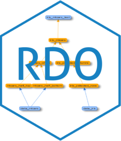

by Kamil Wais
The RDO R package allows you to create and interact with Reproducible Data Objects (RDO). An RDO object encapsulates both data and R code needed to reproduce the data.
The development of the RDO package is supported by Roche.
RDOs can have other RDOs as dependencies and can be composed into complex hierarchy (RDO trees).
Interacting with such RDO tree is similar to interacting with a single RDO, as each RDO has the same programming interface thanks to composite programming design pattern.
You can (re)run the RDO reproducible code and refresh the data cache, check status, validate if the code still gives the same cached data, clear data cache, access code and data cache of any of the dependencies.
Both a single RDO and a complex RDO tree can be cloned, and code of the cloned dependencies can be also modified later.
Installation
You can install the released version of RDO from CRAN with:
And the development version from GitHub with:
Basic example
Let’s assume we have some exemplary R code that changes a dataset in some way:
Now, we would like to encapsulate this code and the changed data inside an RDO.
The RDO is an R6 class so to create a new RDO object just use the constructor function:
# library(RDO)
data_mtcars <- RDO::RDO$new(name = "data_mtcars")
data_mtcars
#> <RDO>
#> Name: data_mtcars
#> Dependencies: none.
#> Status:
#> - created: 2020-03-02 13:06:12 UTC
#> - last changed: 2020-03-02 13:06:12 UTC
#> - last touched: (never)
#> - last validated: (never)
#> - last run time:
#> - run time total: 0
#> - is validated? FALSE
#> - is locked? FALSE
#> - cache size: 0 Mb
#> - cached total: 0 MbNow we can add the reproducible R code as an R expression.
data_mtcars$code <- expression({
data_mtcars <- mtcars
data_mtcars <- data_mtcars[data_mtcars$mpg > 30, c("cyl", "mpg")]
})If we have a code, we can run it and the result will be cached inside RDO.
data_mtcars$run()
#> Evaluating RDO: data_mtcars ... done!
#> ...evaluation of data_mtcars completed.We can now access the cache…
data_mtcars$cache
#> cyl mpg
#> Fiat 128 4 32.4
#> Honda Civic 4 30.4
#> Toyota Corolla 4 33.9
#> Lotus Europa 4 30.4Let’s see if the RDO is validated…
The RDO is validated, so we can be pretty sure that last evaluation of the code give in result the cached data.
Let’s update the code just a bit and check the validation status…
data_mtcars$code <- expression({
data_mtcars <- mtcars
data_mtcars <- data_mtcars[data_mtcars$mpg > 31, c("cyl", "mpg")]
})
data_mtcars$is_validated()
#> RDO: 'data_mtcars' is NOT VALIDATED!
#> [1] FALSEThe RDO is NOT validated! We need to update the cache…
data_mtcars$run()
#> Evaluating RDO: data_mtcars ... done!
#> ...evaluation of data_mtcars completed.
data_mtcars
#> <RDO>
#> Name: data_mtcars
#> Dependencies: none.
#> Status:
#> - created: 2020-03-02 13:06:12 UTC
#> - last changed: 2020-03-02 13:06:12 UTC
#> - last touched: 2020-03-02 13:06:12 UTC
#> - last validated: 2020-03-02 13:06:12 UTC
#> - last run time: 0.0190010070800781
#> - run time total: 0.0190010070800781
#> - is validated? TRUE
#> - is locked? FALSE
#> - cache size: 0.001 Mb
#> - cached total: 0.001 MbWe have a validated RDO. At any time we can extract the cached data and the reproducible R code.
data_mtcars$cache
#> cyl mpg
#> Fiat 128 4 32.4
#> Toyota Corolla 4 33.9
data_mtcars$code
#> <RDO code>
#> data_mtcars <- mtcars
#> data_mtcars <- data_mtcars[data_mtcars$mpg > 31, c("cyl", "mpg")]
#> <RDO>
#> Name: data_mtcars
#> Dependencies: none.
#> Status:
#> - created: 2020-03-02 13:06:12 UTC
#> - last changed: 2020-03-02 13:06:12 UTC
#> - last touched: 2020-03-02 13:06:12 UTC
#> - last validated: 2020-03-02 13:06:12 UTC
#> - last run time: 0.0190010070800781
#> - run time total: 0.0190010070800781
#> - is validated? TRUE
#> - is locked? FALSE
#> - cache size: 0.001 Mb
#> - cached total: 0.001 Mb